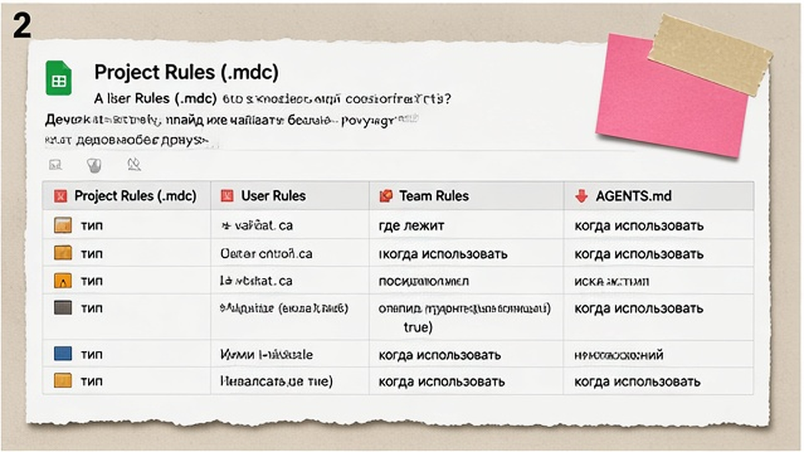
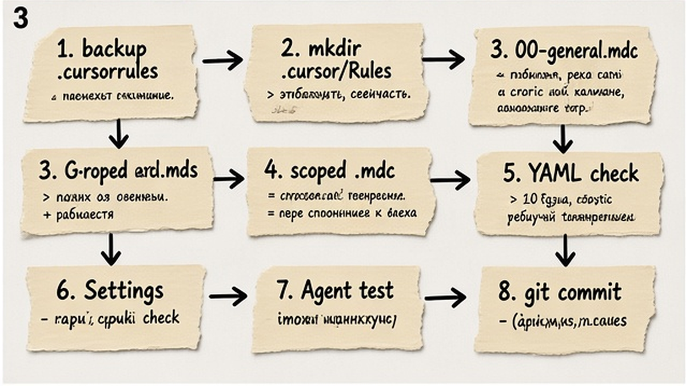
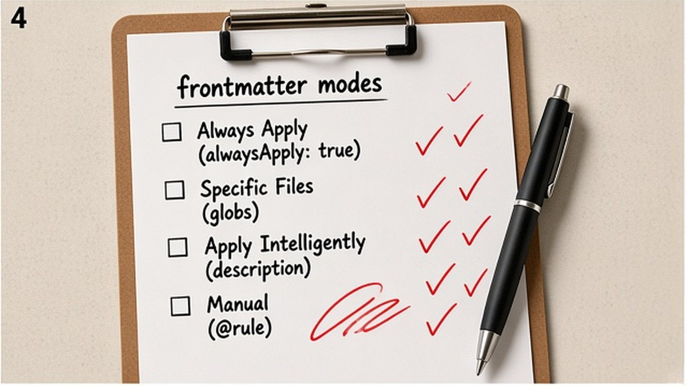

Agent в Cursor снова переписал файл "как ему кажется", хотя вы уже десять раз просили не трогать стили? Без cursor rules инструкции живут только в вашей голове и в длинных сообщениях чата. За 20–40 минут вы соберёте папку .cursor/rules с файлами .mdc, настроите режимы alwaysApply и globs, проверите Active Rules в Agent и закоммитите правила для команды.
TL;DR / Быстрый инсайт: Cursor Rules – постоянные инструкции для Agent (чат-режим с автономными действиями), как стикеры на мониторе ассистента. Храните их в .cursor/rules/*.mdc с YAML frontmatter: alwaysApply, globs или description. Tab и Cmd+K rules не читают. Один короткий alwaysApply-файл плюс scoped-правила по папкам – рабочий минимум на вечер.
Cursor Rules – это текстовые правила, которые редактор подмешивает в контекст Agent при каждом запросе. Agent mode – режим, где нейросеть сама правит файлы, запускает команды и ходит по проекту; Tab – только подсказки при наборе кода, rules туда не попадают. По данным Яндекс Вордстат (июнь 2026), запрос "cursor rules" даёт около 248 показов в месяц в РФ – люди уже в Cursor и ищут, как зафиксировать поведение агента.
После настройки rules логичный следующий шаг – подключить MCP-серверы: rules говорят "как думать", MCP даёт доступ к браузеру, GitHub и CMS.

Без rules каждый новый чат начинается с нуля: агент не знает ваш стек, язык ответов и запреты. Файл .cursorrules в корне репозитория – устаревший формат (legacy): Cursor ещё может его читать, но для Agent mode в 2026 опирайтесь на .mdc в .cursor/rules.
| Тип правил | Где лежит | Когда использовать |
|---|---|---|
| Project Rules (.mdc) | .cursor/rules/ | Командный репозиторий, version control в git |
| User Rules | Customize → Rules | Личные привычки на всех проектах |
| Team Rules | Dashboard (Team/Enterprise) | Корпоративные стандарты |
| AGENTS.md | Корень или подпапки | Простой always-on markdown без globs |
При конфликте побеждает более ранний уровень: Team Rules → Project Rules → User Rules. Делайте: короткие project rules в git, чтобы команда видела одно и то же. Не делайте: копировать 400 строк в один alwaysApply – перегрузите контекст и получите "глухого" агента.

Workflow настройки:
Backup .cursorrules → mkdir .cursor/rules → 00-general.mdc (alwaysApply) → scoped .mdc с globs → проверка YAML → Settings → Rules → тест в Agent → git commit
Пример always-on правила (расширение строго .mdc, не .md – обычный .md в этой папке Cursor игнорирует):
Пример always-on правила (.mdc):
---
alwaysApply: true
---
- Отвечай на русском, код и команды – на английском.
- Перед удалением файлов и массовым рефакторингом – спроси подтверждение.
- После правок запускай lint/test, если они есть в package.json.
- Не коммить секреты и API-ключи.
Пример scoped-правила под React/TS (несколько glob-паттернов – через запятую):
Пример scoped-правила (React/TS):
---
description: "React и TypeScript в src/"
globs: "src/**/*.tsx,src/**/*.ts"
alwaysApply: false
---
- Функциональные компоненты, hooks вместо классов.
- Имена компонентов – PascalCase, файлы – kebab-case.
Делайте: держите каждый .mdc короче 500 строк по рекомендации Cursor. Не делайте: забывать закрывающий --- в YAML – правило часто "молчит" без ошибки в UI.

Frontmatter – блок YAML между двумя строками --- в начале .mdc; он говорит Cursor, когда подмешивать текст правила.
| Режим в UI | Настройка в YAML | Когда срабатывает |
|---|---|---|
| Always Apply | alwaysApply: true | Всегда в контексте Agent; globs и description игнорируются |
| Apply to Specific Files | alwaysApply: false + globs | Когда в контексте есть файлы по маске (**/*.tsx) |
| Apply Intelligently | alwaysApply: false + description | Agent сам решает по описанию правила |
| Apply Manually | alwaysApply: false без globs и description | Только если вызвать @имя-правила в чате |
Делайте: alwaysApply только для 3–15 глобальных пунктов. Стек, тесты, API – в отдельные .mdc с globs. Не делайте: ставить alwaysApply: true на всё подряд – съедает окно контекста.
Модульность – как отдельные папки в шкафу: general, frontend, api, tests, content. Для контент-репозитория вместо src/**/*.tsx возьмите memory/**/*.md или articles/**/*.html.
Создать правило можно через /create-rule в Agent или Customize → Rules → Add Rule – Cursor сам предложит frontmatter. В правилах можно ссылаться на файлы через @filename.ts. Шаблоны сообщества – на awesome-cursorrules (40 747 stars на GitHub на 10.09.2026); адаптируйте под свой репо, не копируйте слепо.
Делайте: один concern – один файл. Не делайте: дублировать те же пункты в AGENTS.md и в .mdc с противоречиями – агент запутается.
Делайте: git add .cursor/rules/ и commit с понятным сообщением. Не делайте: держать legacy-файл и новые .mdc одновременно – дубли и конфликты непредсказуемы.
Если cursor rules "не работают" в Agent mode, пройдите чеклист:
Rules не влияют на Tab и Inline Edit (Cmd+K) – только на Agent Chat. Если нужен доступ к внешним сервисам, rules дополняйте настройкой MCP, а не раздуванием alwaysApply.
Делайте: явно назовите модель в Agent, если правила "плавают" на Auto (совет сообщества). Не делайте: ждать, что rules заменят MCP для браузера или CMS.
Материал проверен: эксперт Артур Хорошев (CEO Maya AI, практик Cursor, MCP и автоматизации).
Достоверность данных: поведение Project Rules, frontmatter и режимы активации сверены с документацией Cursor на 10.09.2026; показатели Вордстат ("cursor rules" – 248, "как настроить cursor" – 186) – по данным Яндекс Вордстат, июнь 2026.
Создайте .cursor/rules/, добавьте .mdc с YAML frontmatter (--- в начале и конце), задайте alwaysApply или globs, откройте Settings → Rules и в новом Agent-чате проверьте Active Rules. Закоммитьте папку в git.
.mdc – файл в .cursor/rules/ с frontmatter и выбором режима (always, globs, manual). .cursorrules – один legacy-файл в корне без модульности. Для Agent mode в 2026 используйте .mdc.
Проверьте: папка .cursor/rules/, расширение .mdc, закрывающий ---, glob с **, нет ли дубля .cursorrules, новый чат Agent. Rules не действуют в Tab – только в Agent Chat.
Always Apply – для 3–15 глобальных правил. Всё, что привязано к папкам или стеку – отдельные .mdc с globs или description. Так экономите контекст.
AGENTS.md – простой markdown always-on без globs. .mdc – когда нужны маски файлов и четыре режима активации. Не дублируйте противоречия в обоих местах.
Нет. По официальной документации Cursor rules работают в Agent (Chat). Tab и Inline Edit их не подхватывают.
Backup старого файла, разбейте текст на 2–3 .mdc, назначьте frontmatter, протестируйте Active Rules в Agent, затем удалите .cursorrules и сделайте git commit.